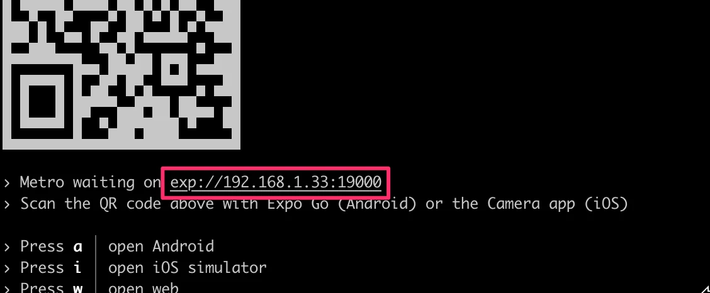
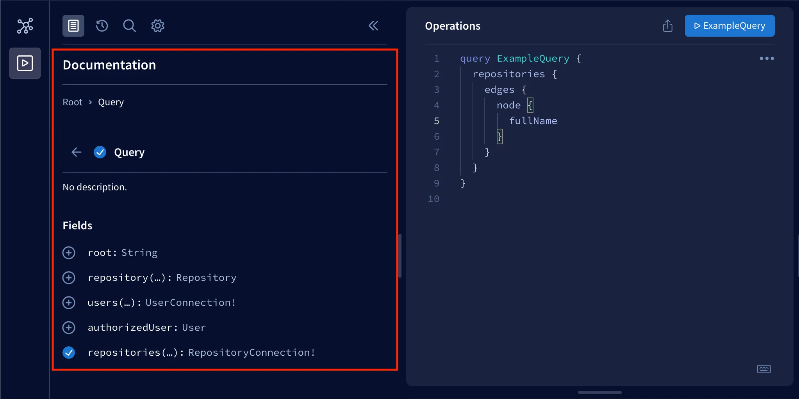
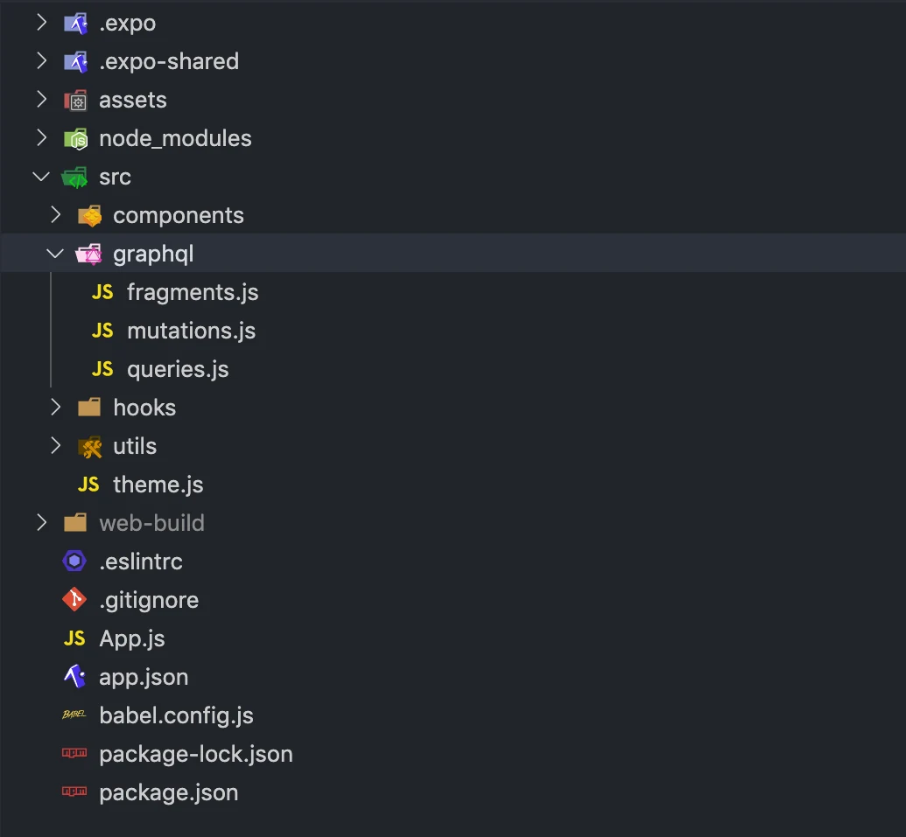

التواصل مع الخادم
حتى الآن، نفّذنا ميزات في تطبيقنا دون أي تواصل فعلي مع الخادم. فمثلاً، قائمة المستودعات المُقيَّمة التي نفّذناها تستخدم بيانات وهمية، ونموذج تسجيل الدخول لا يرسل بيانات اعتماد المستخدم إلى أي نقطة نهاية للمصادقة. في هذا القسم، سنتعلم كيفية التواصل مع خادم باستخدام طلبات HTTP، وكيفية استخدام Apollo Client في تطبيق React Native، وكيفية تخزين البيانات في جهاز المستخدم.
قريباً سنتعلم كيفية التواصل مع خادم في تطبيقنا. وقبل أن نصل إلى ذلك، نحتاج إلى خادم لنتواصل معه. ولهذا الغرض، لدينا تنفيذ خادم مكتمل في مستودع rate-repository-api. ويلبي خادم rate-repository-api كل احتياجات تطبيقنا من API خلال هذا الجزء. وهو يستخدم قاعدة بيانات SQLite التي لا تحتاج إلى أي إعداد، ويوفّر واجهة Apollo GraphQL API إلى جانب بضع نقاط نهاية REST API.
قبل التقدم أكثر في المادة، أعدّ خادم rate-repository-api باتباع تعليمات الإعداد في ملف README الخاص بالمستودع. لاحظ أنه إذا كنت تستخدم محاكياً للتطوير، فمن المستحسن تشغيل الخادم والمحاكي على الحاسوب نفسه. فهذا يسهّل طلبات الشبكة بدرجة كبيرة.
طلبات HTTP
يوفّر React Native واجهة Fetch API لإرسال طلبات HTTP في تطبيقاتنا. كما يدعم React Native واجهة XMLHttpRequest API القديمة الجيدة، وهو ما يتيح استخدام مكتبات طرف ثالث مثل Axios. وهاتان الواجهتان مماثلتان للواجهات الموجودة في بيئة المتصفح، وهما متاحتان عالمياً دون الحاجة إلى استيراد.
من استخدم واجهتي Fetch API وXMLHttpRequest API معاً يوافق على الأرجح على أن Fetch API أسهل استخداماً وأكثر حداثة. لكن هذا لا يعني أن واجهة XMLHttpRequest API بلا استخدامات. ومن أجل البساطة، سنستخدم Fetch API فقط في أمثلتنا.
يمكن إرسال طلبات HTTP باستخدام Fetch API عبر دالة fetch. والوسيط الأول للدالة هو عنوان URL الخاص بالمورد:
fetch('https://my-api.com/get-end-point');
طريقة الطلب الافتراضية هي GET. والوسيط الثاني لدالة fetch هو كائن خيارات، يمكنك استخدامه مثلاً لتحديد طريقة طلب مختلفة، أو ترويسات الطلب، أو جسم الطلب:
fetch('https://my-api.com/post-end-point', {
method: 'POST',
headers: {
Accept: 'application/json',
'Content-Type': 'application/json',
},
body: JSON.stringify({
firstParam: 'firstValue',
secondParam: 'secondValue',
}),
});
لاحظ أن عناوين URL هذه وهمية و(على الأرجح) لن ترسل استجابة لطلباتك. وبالمقارنة مع Axios، تعمل Fetch API على مستوى أدنى قليلاً. فمثلاً، لا توجد أي عملية تسلسل أو تحليل لجسم الطلب أو الاستجابة. وهذا يعني أنه عليك مثلاً ضبط ترويسة Content-Type بنفسك واستخدام دالة JSON.stringify لتسلسل جسم الطلب.
تُعيد دالة fetch قيمة promise تُحلّ إلى كائن Response. لاحظ أن رموز حالة الأخطاء مثل 400 و500 لا تُرفض كما يحدث مثلاً في Axios. وفي حالة استجابة بصيغة JSON، يمكننا تحليل جسم الاستجابة باستخدام دالة Response.json:
const fetchMovies = async () => {
const response = await fetch('https://reactnative.dev/movies.json');
const json = await response.json();
return json;
};
لمقدمة أكثر تفصيلاً عن Fetch API، اقرأ مقال Using Fetch في وثائق MDN.
بعد ذلك، لنجرّب Fetch API عملياً. يوفّر خادم rate-repository-api نقطة نهاية لإرجاع قائمة مُقسَّمة إلى صفحات من المستودعات المُقيَّمة. وبعد تشغيل الخادم، ينبغي أن تكون قادراً على الوصول إلى نقطة النهاية على http://localhost:5000/api/repositories (إلا إذا غيّرت المنفذ). والبيانات مُقسَّمة إلى صفحات بصيغة ترقيم صفحات معتمد على المؤشر (cursor based pagination) الشائعة. وتوجد بيانات المستودعات الفعلية خلف مفتاح node في مصفوفة edges.
لسوء الحظ، إذا كنا نستخدم جهازاً خارجياً، فلا يمكننا الوصول إلى الخادم مباشرةً في تطبيقنا باستخدام عنوان http://localhost:5000/api/repositories. ولإرسال طلب إلى نقطة النهاية هذه في تطبيقنا، نحتاج إلى الوصول إلى الخادم باستخدام عنوان IP الخاص به في شبكته المحلية. ولمعرفة ما هو هذا العنوان، افتح أدوات تطوير Expo بتشغيل npm start. في الطرفية ينبغي أن ترى عنوان URL يبدأ بـ exp:// أسفل رمز QR، بعد نص "Metro waiting on":

انسخ عنوان IP الواقع بين exp:// و :، وهو في هذا المثال 192.168.1.33. أنشئ عنوان URL بالصيغة http://<IP_ADDRESS>:5000/api/repositories وافتحه في المتصفح. ينبغي أن ترى الاستجابة نفسها التي رأيتها مع عنوان localhost.
الآن بعد أن عرفنا عنوان URL لنقطة النهاية، لنستخدم البيانات الفعلية التي يوفّرها الخادم في قائمة المستودعات المُقيَّمة. نستخدم حالياً بيانات وهمية مخزّنة في متغير repositories. احذف متغير repositories واستبدل استخدام البيانات الوهمية بهذه القطعة من الشيفرة في ملف RepositoryList.jsx في مجلد components:
import { useState, useEffect } from 'react'; // HIGHLIGHT LINE
// ...
const RepositoryList = () => {
// BEGIN HIGHLIGHT
const [repositories, setRepositories] = useState();
const fetchRepositories = async () => {
// استبدل جزء عنوان IP بعنوان IP الخاص بك!
const response = await fetch('http://192.168.1.33:5000/api/repositories');
const json = await response.json();
console.log(json);
setRepositories(json);
};
useEffect(() => {
fetchRepositories();
}, []);
// احصل على العناصر (nodes) من مصفوفة edges
const repositoryNodes = repositories
? repositories.edges.map(edge => edge.node)
: [];
// END HIGHLIGHT
return (
<FlatList
data={repositoryNodes} // HIGHLIGHT LINE
// props أخرى
/>
);
};
export default RepositoryList;
نستخدم خطاف useState من React للحفاظ على حالة قائمة المستودعات، وخطاف useEffect لاستدعاء دالة fetchRepositories عند تركيب مكوّن RepositoryList. ونستخرج المستودعات الفعلية إلى متغير repositoryNodes ونستبدل به المتغير repositories المستخدم سابقاً في خاصية data لمكوّن FlatList. والآن ينبغي أن ترى بيانات فعلية يوفّرها الخادم في قائمة المستودعات المُقيَّمة.
من المفيد عادةً تسجيل استجابة الخادم خلال مرحلة التطوير لتتمكن من فحصها كما فعلنا في دالة fetchRepositories. ينبغي أن ترى رسالة السجل هذه في طرفية Expo CLI أو في أدوات تطوير Expo إذا انتقلت إلى سجلات جهازك كما تعلمنا في قسم تصحيح الأخطاء. وإذا كنت تستخدم تطبيق Expo للهواتف المحمولة في التطوير وفشل طلب الشبكة، فتأكد من أن الحاسوب الذي تشغّل عليه الخادم وهاتفك متصلان بشبكة Wi-Fi نفسها. وإذا لم يكن ذلك ممكناً، فإما أن تستخدم محاكياً على الحاسوب نفسه الذي يعمل عليه الخادم، أو أن تستخدم خيار النفق.
يمكن تحسين شيفرة جلب البيانات الحالية في مكوّن RepositoryList ببعض إعادة الهيكلة. فمثلاً، المكوّن على علم بتفاصيل طلب الشبكة مثل عنوان URL لنقطة النهاية. وإضافةً إلى ذلك، لشيفرة جلب البيانات إمكانات كبيرة لإعادة الاستخدام. لنُعِد هيكلة شيفرة المكوّن باستخراج شيفرة جلب البيانات إلى خطاف خاص بها. أنشئ مجلد hooks في مجلد src، وأنشئ في مجلد hooks هذا ملف useRepositories.js بالمحتوى التالي:
import { useState, useEffect } from 'react';
const useRepositories = () => {
const [repositories, setRepositories] = useState();
const [loading, setLoading] = useState(false);
const fetchRepositories = async () => {
setLoading(true);
// استبدل جزء عنوان IP بعنوان IP الخاص بك!
const response = await fetch('http://192.168.1.33:5000/api/repositories');
const json = await response.json();
setLoading(false);
setRepositories(json);
};
useEffect(() => {
fetchRepositories();
}, []);
return { repositories, loading, refetch: fetchRepositories };
};
export default useRepositories;
الآن بعد أن أصبح لدينا تجريد نظيف لجلب المستودعات المُقيَّمة، لنستخدم خطاف useRepositories في مكوّن RepositoryList:
// ...
import useRepositories from '../hooks/useRepositories'; // HIGHLIGHT LINE
const RepositoryList = () => {
const { repositories } = useRepositories(); // HIGHLIGHT LINE
const repositoryNodes = repositories
? repositories.edges.map(edge => edge.node)
: [];
return (
<FlatList
data={repositoryNodes}
// props أخرى
/>
);
};
export default RepositoryList;
وهذا كل شيء، الآن لم يعد مكوّن RepositoryList على علم بطريقة الحصول على المستودعات. وربما في المستقبل سنحصل عليها عبر GraphQL API بدلاً من REST API. سنرى ما سيحدث.
GraphQL وApollo Client
في الجزء 8 تعلمنا عن GraphQL وكيفية إرسال استعلامات GraphQL إلى خادم Apollo باستخدام Apollo Client في تطبيقات React. والخبر السار أننا نستطيع استخدام Apollo Client في تطبيق React Native تماماً كما نفعل في تطبيق React للويب.
كما ذُكر سابقاً، يوفّر خادم rate-repository-api واجهة GraphQL API منفَّذة باستخدام Apollo Server. وبعد تشغيل الخادم، يمكنك الوصول إلى Apollo Sandbox على http://localhost:4000. وApollo Sandbox أداة لإنشاء استعلامات GraphQL وفحص مخطط GraphQL APIs وتوثيقها. وإذا احتجت إلى إرسال استعلام في تطبيقك فاختبره دائماً أولاً باستخدام Apollo Sandbox قبل تنفيذه في الشيفرة. فتصحيح المشكلات المحتملة في الاستعلام أسهل بكثير في Apollo Sandbox منه في التطبيق. وإذا لم تكن متأكداً من الاستعلامات المتاحة أو كيفية استخدامها، فيمكنك الاطلاع على التوثيق بجوار محرّر العمليات:

في تطبيق React Native الخاص بنا، سنستخدم مكتبة @apollo/client نفسها كما في الجزء 8. لنبدأ بتثبيت المكتبة إلى جانب مكتبة graphql المطلوبة كاعتمادية نظيرة (peer dependency):
npm install @apollo/client graphql
لننشئ دالة مساعدة لإنشاء Apollo Client بالإعدادات المطلوبة. أنشئ مجلد utils في مجلد src، وأنشئ في مجلد utils هذا ملف apolloClient.js. وفي ذلك الملف اضبط Apollo Client للاتصال بخادم Apollo:
import { ApolloClient, HttpLink, InMemoryCache } from '@apollo/client';
const httpLink = new HttpLink({
uri: 'http://192.168.1.100:4000/graphql',
});
const createApolloClient = () => {
return new ApolloClient({
link: httpLink,
cache: new InMemoryCache(),
});
};
export default createApolloClient;
عنوان URL المستخدم للاتصال بخادم Apollo هو نفسه الذي استخدمته مع Fetch API، باستثناء أن المنفذ هو 4000 والمسار هو /graphql. وأخيراً، نحتاج إلى توفير Apollo Client باستخدام سياق ApolloProvider. وسنضيفه إلى مكوّن App في ملف App.js:
import { ApolloProvider } from '@apollo/client/react'; // HIGHLIGHT LINE
import { StatusBar } from 'expo-status-bar';
import { NativeRouter } from 'react-router-native';
import Main from './src/components/Main';
import createApolloClient from './src/utils/apolloClient'; // HIGHLIGHT LINE
const apolloClient = createApolloClient(); // HIGHLIGHT LINE
const App = () => {
return (
<StatusBar style="light" />
<NativeRouter>
<ApolloProvider client={apolloClient}> // HIGHLIGHT LINE
<Main />
</ApolloProvider> // HIGHLIGHT LINE
</NativeRouter>
);
};
export default App;
تنظيم الشيفرة المتعلقة بـ GraphQL
الأمر متروك لك في كيفية تنظيم الشيفرة المتعلقة بـ GraphQL في تطبيقك. لكن من أجل بنية مرجعية، لنلقِ نظرة على طريقة بسيطة وفعّالة إلى حد كبير لتنظيم الشيفرة المتعلقة بـ GraphQL. في هذه البنية، نعرّف الاستعلامات وmutations وfragments وربما كيانات أخرى في ملفات خاصة بها. وتقع هذه الملفات في المجلد نفسه. وإليك مثالاً على البنية التي يمكنك استخدامها للبدء:

يمكنك استيراد وسم القالب النصي (template literal tag) gql المستخدم لتعريف استعلامات GraphQL من مكتبة @apollo/client. وإذا اتبعنا البنية المقترحة أعلاه، فيمكن أن يكون لدينا ملف queries.js في مجلد graphql لاستعلامات GraphQL الخاصة بتطبيقنا. ويمكن تخزين كل استعلام في متغير وتصديره هكذا:
import { gql } from '@apollo/client';
export const GET_REPOSITORIES = gql`
query {
repositories {
${/* ... */}
}
}
`;
// استعلامات أخرى...
يمكننا استيراد هذه المتغيرات واستخدامها مع خطاف useQuery هكذا:
import { useQuery } from '@apollo/client/react';
import { GET_REPOSITORIES } from '../graphql/queries';
const Component = () => {
const { data, error, loading } = useQuery(GET_REPOSITORIES);
// ...
};
والأمر نفسه ينطبق على تنظيم mutations. والفرق الوحيد أننا نعرّفها في ملف مختلف هو mutations.js. ويُوصى باستخدام fragments في الاستعلامات لتجنب إعادة كتابة الحقول نفسها مراراً وتكراراً.
تطوير البنية
عندما يكبر تطبيقنا، قد تأتي أوقات تصبح فيها ملفات معيّنة أكبر من أن يمكن إدارتها. فمثلاً، لدينا مكوّن A يعرض المكوّنين B و C. وكل هذه المكوّنات معرَّفة في ملف A.jsx في مجلد components. ونريد استخراج المكوّنين B و C إلى ملفين خاصين بهما B.jsx و C.jsx دون إعادة هيكلة كبيرة. ولدينا خياران:
- أنشئ ملفين B.jsx و C.jsx في مجلد components. وينتج عن ذلك البنية التالية:
components/
A.jsx
B.jsx
C.jsx
...
- أنشئ مجلد A في مجلد components وأنشئ فيه ملفي B.jsx و C.jsx. ولتجنب كسر المكوّنات التي تستورد ملف A.jsx، انقل ملف A.jsx إلى مجلد A وأعد تسميته إلى index.jsx. وينتج عن ذلك البنية التالية:
components/
A/
B.jsx
C.jsx
index.jsx
...
الخيار الأول مقبول تماماً، لكن إذا لم يكن المكوّنان B و C قابلين لإعادة الاستخدام خارج المكوّن A، فلا فائدة من تضخيم مجلد components بإضافتهما كملفين منفصلين. والخيار الثاني معياري (modular) تماماً ولا يكسر أي عمليات استيراد، لأن استيراد مسار مثل ./A سيتطابق مع كلٍّ من A.jsx و A/index.jsx.
تمرين 10.11
تمرين 10.11: جلب المستودعات باستخدام Apollo Client
11. جلب المستودعات باستخدام Apollo Client
متغيرات البيئة
من المرجّح أن يعمل كل تطبيق في أكثر من بيئة واحدة. ومن أبرز هاتين البيئتين بيئة التطوير وبيئة الإنتاج. ومن بين هاتين، بيئة التطوير هي التي نشغّل فيها التطبيق الآن. وعادةً ما تكون لبيئات مختلفة اعتماديات مختلفة، فمثلاً قد يستخدم الخادم الذي نطوّره محلياً قاعدة بيانات محلية، بينما يستخدم الخادم المنشور في بيئة الإنتاج قاعدة بيانات الإنتاج. ولجعل الشيفرة مستقلة عن البيئة، نحتاج إلى جعل هذه الاعتماديات قابلة للضبط عبر معاملات. في الوقت الحالي، نستخدم في تطبيقنا قيمة مثبّتة في الشيفرة تعتمد اعتماداً كبيراً على البيئة: عنوان URL الخاص بالخادم.
تعلمنا سابقاً أنه يمكننا تزويد البرامج قيد التشغيل بمتغيرات البيئة. ويمكن تعريف هذه المتغيرات في سطر الأوامر أو باستخدام ملفات إعداد البيئة مثل ملفات .env. وقد استخدمنا سابقاً في المقرر مكتبة dotenv لقراءة ملفات .env. ويقرأ Expo تلقائياً ملف .env المعرَّف في جذر المشروع، لذا لا حاجة إلى مكتبة dotenv. غير أن كل متغير بيئة يجب أن يبدأ بالبادئة EXPO_PUBLIC_. يمكنك قراءة المزيد في وثائق Expo.
لننشئ ملف .env في جذر المشروع بالمحتوى التالي:
EXPO_PUBLIC_ENV=test
هنا نعرّف متغير بيئة باسم EXPO_PUBLIC_ENV. وقد تحتاج إلى إعادة تشغيل أدوات تطوير Expo لتطبيق التغييرات التي أجريتها على ملف .env.
وكالعادة، يمكنك الوصول إلى متغير البيئة في التطبيق باستخدام الصيغة process.env.EXPO_PUBLIC_ENV. وكاختبار سريع، يمكننا تسجيل متغير البيئة في مكوّن App:
import { ApolloProvider } from '@apollo/client/react';
import { StatusBar } from 'expo-status-bar';
import { NativeRouter } from 'react-router-native';
import Main from './src/components/Main';
import createApolloClient from './src/utils/apolloClient';
const apolloClient = createApolloClient();
const App = () => {
console.log("env check:", process.env.EXPO_PUBLIC_ENV); // HIGHLIGHT LINE
return (
// ...
);
};
export default App;
ينبغي أن ترى الآن 'env check: test' في السجلات.
لاحظ أنه ليس من الجيد أبداً وضع بيانات حساسة في إعدادات التطبيق. والسبب في ذلك أنه بمجرد أن ينزّل المستخدم تطبيقك، يمكنه نظرياً على الأقل إجراء هندسة عكسية لتطبيقك واكتشاف البيانات الحساسة التي خزّنتها في الشيفرة. فمتغيرات البيئة التي يستخدمها Expo يمكن العثور عليها كنص صريح في التطبيق المُصرَّف، لذا لا تُضمّن معلومات حساسة مثل المفاتيح الخاصة في متغيرات EXPO_PUBLIC_.
12. متغيرات البيئة
تخزين البيانات في جهاز المستخدم
هناك أوقات نحتاج فيها إلى تخزين بعض البيانات الدائمة في جهاز المستخدم. ومن السيناريوهات الشائعة لذلك تخزين رمز مصادقة المستخدم (authentication token) حتى نتمكن من استرجاعه حتى لو أغلق المستخدم تطبيقنا وأعاد فتحه. وقد استخدمنا في تطوير الويب كائن localStorage في المتصفح لتحقيق هذه الوظيفة. ويوفّر React Native تخزيناً دائماً مماثلاً هو AsyncStorage.
يمكننا استخدام npx expo install لتثبيت إصدار حزمة @react-native-async-storage/async-storage المناسب لإصدار Expo SDK لدينا:
npx expo install @react-native-async-storage/async-storage
تتشابه واجهة AsyncStorage من نواحٍ كثيرة مع واجهة localStorage. فكلاهما تخزين مفتاح-قيمة بدوال متشابهة. وأكبر فرق بينهما هو أن عمليات AsyncStorage غير متزامنة كما يوحي الاسم.
ولأن AsyncStorage يعمل بمفاتيح نصية في نطاق أسماء عام، فمن الجيد إنشاء تجريد بسيط لعملياته. ويمكن تنفيذ هذا التجريد مثلاً باستخدام صنف (class). وكمثال، يمكننا تنفيذ تخزين لسلة تسوق لتخزين المنتجات التي يريد المستخدم شراءها:
import AsyncStorage from '@react-native-async-storage/async-storage';
class ShoppingCartStorage {
constructor(namespace = 'shoppingCart') {
this.namespace = namespace;
}
async getProducts() {
const rawProducts = await AsyncStorage.getItem(
`${this.namespace}:products`,
);
return rawProducts ? JSON.parse(rawProducts) : [];
}
async addProduct(productId) {
const currentProducts = await this.getProducts();
const newProducts = [...currentProducts, productId];
await AsyncStorage.setItem(
`${this.namespace}:products`,
JSON.stringify(newProducts),
);
}
async clearProducts() {
await AsyncStorage.removeItem(`${this.namespace}:products`);
}
}
const doShopping = async () => {
const shoppingCartA = new ShoppingCartStorage('shoppingCartA');
const shoppingCartB = new ShoppingCartStorage('shoppingCartB');
await shoppingCartA.addProduct('chips');
await shoppingCartA.addProduct('soda');
await shoppingCartB.addProduct('milk');
const productsA = await shoppingCartA.getProducts();
const productsB = await shoppingCartB.getProducts();
console.log(productsA, productsB);
await shoppingCartA.clearProducts();
await shoppingCartB.clearProducts();
};
doShopping();
ولأن مفاتيح AsyncStorage عامة، فمن الجيد عادةً إضافة نطاق أسماء (namespace) للمفاتيح. وفي هذا السياق، نطاق الأسماء مجرد بادئة نوفّرها لمفاتيح تجريد التخزين. ويحمي استخدام نطاق الأسماء مفاتيح التخزين من التعارض مع مفاتيح AsyncStorage أخرى. وفي هذا المثال، عُرِّف نطاق الأسماء كوسيط للمُنشئ (constructor)، ونستخدم الصيغة namespace:key للمفاتيح.
يمكننا إضافة عنصر إلى التخزين باستخدام دالة AsyncStorage.setItem. والوسيط الأول للدالة هو مفتاح العنصر والوسيط الثاني قيمته. ويجب أن تكون القيمة نصاً، لذا نحتاج إلى تسلسل القيم غير النصية كما فعلنا باستخدام دالة JSON.stringify سابقاً. ويمكن استخدام دالة AsyncStorage.getItem لجلب عنصر من التخزين. ووسيط الدالة هو مفتاح العنصر، الذي ستُحلّ قيمته. ويمكن استخدام دالة AsyncStorage.removeItem لحذف العنصر ذي المفتاح المقدَّم من التخزين.
ملاحظة: SecureStore تخزين دائم مماثل لـ AsyncStorage لكنه يشفّر البيانات المخزّنة. وهذا يجعله أكثر ملاءمة لتخزين بيانات أكثر حساسية.
13. mutation نموذج تسجيل الدخول
14. تخزين رمز الوصول، الخطوة 1
تحسين طلبات Apollo Client
الآن بعد أن نفّذنا تخزيناً لتخزين رمز وصول المستخدم، حان وقت البدء في استخدامه. هيّئ التخزين في مكوّن App:
import { ApolloProvider } from '@apollo/client/react';
import { StatusBar } from 'expo-status-bar';
import { NativeRouter } from 'react-router-native';
import Main from './src/components/Main';
import createApolloClient from './src/utils/apolloClient';
import AuthStorage from './src/utils/authStorage'; // HIGHLIGHT LINE
const authStorage = new AuthStorage(); // HIGHLIGHT LINE
const apolloClient = createApolloClient(authStorage); // HIGHLIGHT LINE
const App = () => {
return (
<>
<StatusBar style="light" />
<NativeRouter>
<ApolloProvider client={apolloClient}>
<Main />
</ApolloProvider>
</NativeRouter>
</>
);
};
export default App;
كما قدّمنا نسخة التخزين إلى دالة createApolloClient كوسيط. وذلك لأننا سنرسل بعد ذلك رمز الوصول إلى خادم Apollo في كل طلب. وسيتوقع خادم Apollo وجود رمز الوصول في ترويسة Authorization بالصيغة Bearer <ACCESS_TOKEN>. ويمكننا تحسين طلب Apollo Client باستخدام دالة setContextLink. لنرسل رمز الوصول إلى خادم Apollo بتعديل دالة createApolloClient في ملف apolloClient.js:
import { ApolloClient, HttpLink, InMemoryCache } from '@apollo/client';
import { SetContextLink } from '@apollo/client/link/context'; // HIGHLIGHT LINE
const httpLink = new HttpLink({
uri: process.env.EXPO_PUBLIC_APOLLO_URI,
});
// BEGIN HIGHLIGHT
const createApolloClient = (authStorage) => {
const authLink = new SetContextLink(async ({ headers }) => {
try {
const accessToken = await authStorage.getAccessToken();
return {
headers: {
...headers,
authorization: accessToken ? `Bearer ${accessToken}` : '',
},
};
} catch (e) {
console.log(e);
return {
headers,
};
}
});
return new ApolloClient({
link: authLink.concat(httpLink),
cache: new InMemoryCache(),
});
};
// END HIGHLIGHT
export default createApolloClient;
استخدام React Context لحقن الاعتماديات
القطعة الأخيرة في أحجية تسجيل الدخول هي دمج التخزين في خطاف useSignIn. ولتحقيق ذلك، يجب أن يكون الخطاف قادراً على الوصول إلى نسخة تخزين الرمز التي هيّأناها في مكوّن App. وReact Context هو بالضبط الأداة التي نحتاجها لهذه المهمة. أنشئ مجلد contexts في مجلد src، وفي ذلك المجلد أنشئ ملف AuthStorageContext.js بالمحتوى التالي:
import { createContext } from 'react';
const AuthStorageContext = createContext();
export default AuthStorageContext;
الآن يمكننا استخدام AuthStorageContext.Provider لتوفير نسخة التخزين إلى الأبناء في السياق. لنضفه إلى مكوّن App:
import { ApolloProvider } from '@apollo/client/react';
import { StatusBar } from 'expo-status-bar';
import { NativeRouter } from 'react-router-native';
import Main from './src/components/Main';
import createApolloClient from './src/utils/apolloClient';
import AuthStorage from './src/utils/authStorage';
import AuthStorageContext from './src/contexts/AuthStorageContext'; // HIGHLIGHT LINE
const authStorage = new AuthStorage();
const apolloClient = createApolloClient(authStorage);
const App = () => {
return (
<>
<StatusBar style="light" />
<NativeRouter>
<ApolloProvider client={apolloClient}>
<AuthStorageContext.Provider value={authStorage}> // HIGHLIGHT LINE
<Main />
</AuthStorageContext.Provider> // HIGHLIGHT LINE
</ApolloProvider>
</NativeRouter>
</>
);
};
export default App;
أصبح الوصول إلى نسخة التخزين في خطاف useSignIn ممكناً الآن باستخدام خطاف useContext من React هكذا:
// ...
import { useContext } from 'react'; // HIGHLIGHT LINE
import AuthStorageContext from '../contexts/AuthStorageContext';
const useSignIn = () => {
const authStorage = useContext(AuthStorageContext); // ...
};
لاحظ أن الوصول إلى قيمة سياق باستخدام خطاف useContext لا يعمل إلا إذا استُخدم خطاف useContext في مكوّن ابن لمكوّن Context.Provider.
الوصول إلى نسخة AuthStorage باستخدام useContext(AuthStorageContext) مطوّل بعض الشيء ويكشف تفاصيل التنفيذ. لنحسّن ذلك بتنفيذ خطاف useAuthStorage في ملف useAuthStorage.js في مجلد hooks:
import { useContext } from 'react';
import AuthStorageContext from '../contexts/AuthStorageContext';
const useAuthStorage = () => {
return useContext(AuthStorageContext);
};
export default useAuthStorage;
تنفيذ الخطاف بسيط جداً، لكنه يحسّن قابلية قراءة وصيانة الخطافات والمكوّنات التي تستخدمه. ويمكننا استخدام الخطاف لإعادة هيكلة خطاف useSignIn هكذا:
// ...
import useAuthStorage from '../hooks/useAuthStorage'; // HIGHLIGHT LINE
const useSignIn = () => {
const authStorage = useAuthStorage(); // ...
};
تفتح القدرة على توفير البيانات لأبناء المكوّن الكثير من حالات الاستخدام لـ React Context، كما رأينا سابقاً في الفصل الأخير من الجزء 6.
لمعرفة المزيد عن حالات الاستخدام هذه، اقرأ مقال Kent C. Dodds الملهِم How to use React Context effectively لتكتشف كيفية الجمع بين خطاف useReducer والسياق لتنفيذ إدارة الحالة. وربما تجد طريقة لاستخدام هذه المعرفة في التمارين القادمة.
15. تخزين رمز الوصول، الخطوة 2
16. تسجيل الخروج